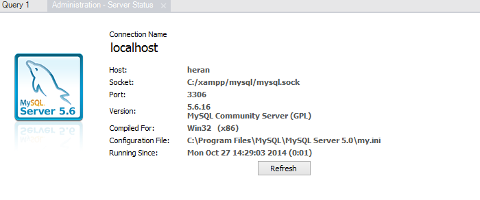
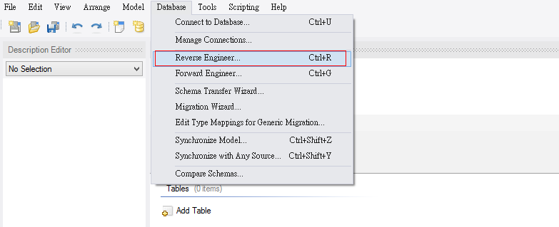
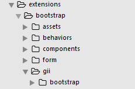
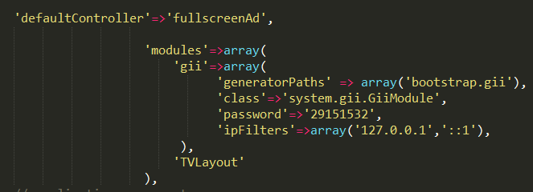
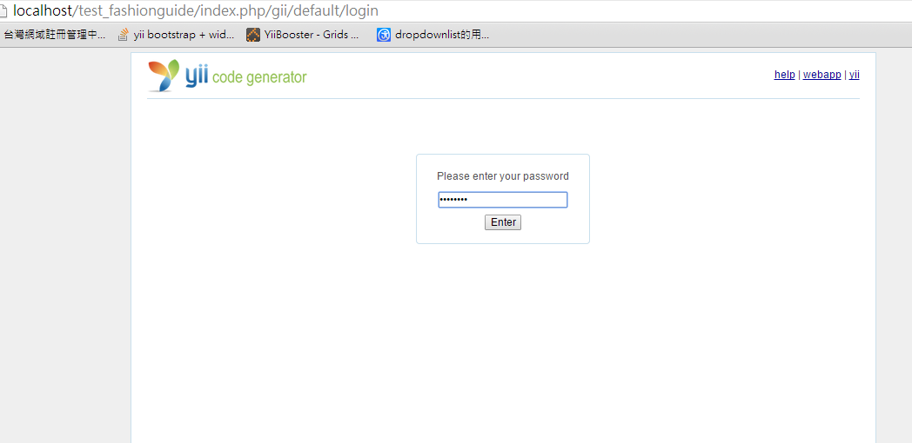
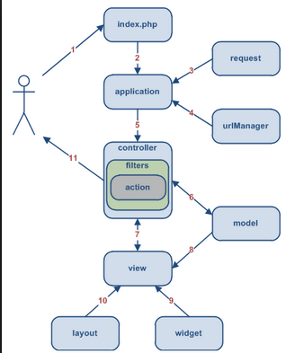

Yii
SQL
MySQL workbench
MySQL常用項目
- MySQL connections
- Reverse Engineer Database
- EER Diagram Export
MySQL connections
Reverse Engineer Database
EER Diagram Export

Gii
- 設定Gii
- 生成Model
- 生成bootstrap CRUD
設定Gii
- bootstrap gii extensions
- main.php設定
Bootstrap Gii - 1
Bootstrap Gii - 2
輸入密碼
生成Model

生成bootstrap CRUD

MVC
- Model
- View
- Controller
MVC 架構
Model
- 屬性修改
- 關聯
Model
關聯
- HAS_MANY
- BELONGS_TO
- MANY_MANY
Model
查詢關聯關聯
- with
View
- index.php
- admin.php
- view.php
- create.php
- update.php
Controller
- 預設Controller
- render和renderPartial
常用元件
- bootstrap.widgets
- zii.widgets
bootstrap.widgets
TbActiveForm
zii.widgets
- grid
- jui
grid
CGridView
jui
Datepicker